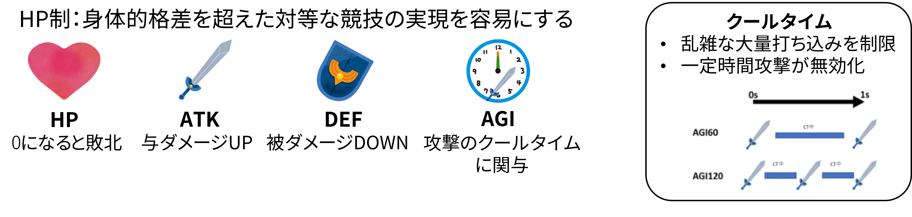
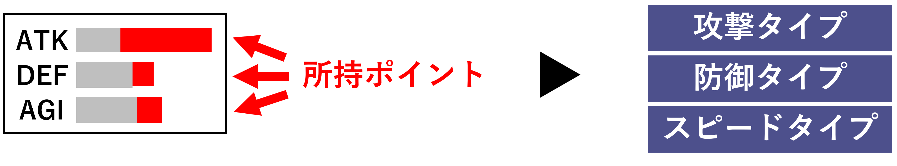
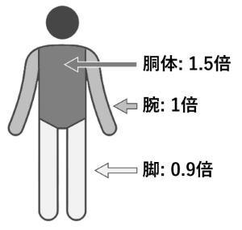
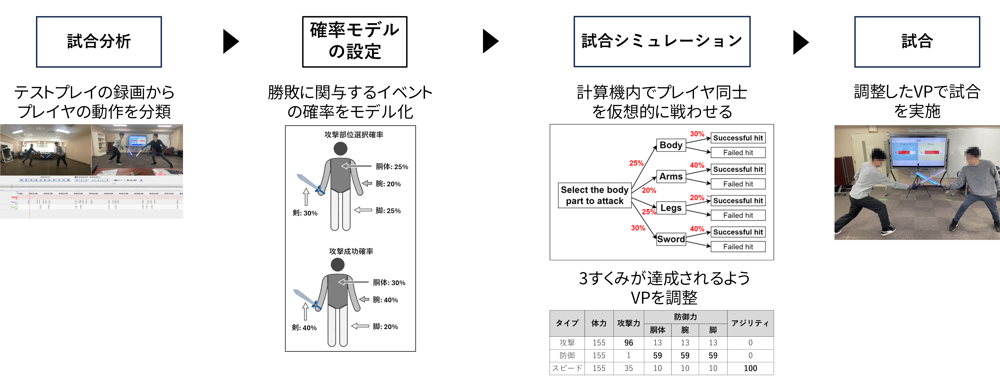

#Augmented Sports #Superhuman Sports #人間拡張 #ゲームデザイン

Parabladeは，剣を振って戦う既存のチャンバラ競技（スポーツチャンバラ，SASSEN）にゲームパラメータを組み合わせて拡張した，新しい形の競技である．従来のチャンバラは，瞬発力や素早い動作が求められるため，身体能力差が生じやすく，異なるレベルのプレイヤーが公平に楽しむことが難しい．そこで，本研究では，ビデオゲームで馴染み深い，「HP」「攻撃力」といったパラメータをプレイヤーに付与し，そのパラメータの多寡によって，身体能力の仮想的な調整を可能とする．これにより，身体能力の高低に関わらず，誰もが楽しめる競技の実現が期待される．
ビジョン
未来のスポーツエンターテイメントを創造し，年齢や障碍といった壁を超えて，多くの人々が「気軽に」，そして「一緒に」スポーツを楽しむことができる社会の実現Augmented Sports
Augmented Sportsとは，既存の物理的なスポーツにバーチャルパラメータ（VP）を組み合わせた，新しい形態のスポーツである．VPとは，プレイヤの各種能力（体力（HP），攻撃力（ATK），防御力（DEF）など）を示す数値であり，既存のビデオゲーム等において広く使用されている． Augmented SportsではこれらVPを適切に活用することで，VPの多寡を通じてそのプレイヤの強弱を調整し，生来の運動能力の高低に関わらず誰もが楽しめるスポーツの実現を目指している．たとえば身体的に弱いプレイヤであっても，VPにより高いHPやATKを付与することで，バーチャルなプレイ能力の強化が可能となり，身体的に強いプレイヤとの対等な試合の実現が可能になる，という効果が期待できる．自分の担当領域
Parabladeの研究は，「Parabladeのゲームデザイン」，および「ゲームデザインの実現に必要な技術開発」の2つの研究内容から構成される．計2名の学生でそれぞれ研究に取り組んでおり，私は前者を担当している．「Parabladeのゲームデザイン」（私の担当箇所）
- Parabladeのルール設計
- Parabladeエンジン（現場で運用するためのシステム）開発
- 公平性を実現するためのゲームパラメータ調整手法の検討（試合シミュレーション）
- プレイヤーに対するゲームパラメータの適切なフィードバック手法の検討
「ゲームデザインの実現に必要な技術開発」
- マイクを利用した身体の打撃部位判定システムの開発（機械学習・音声認識）
ゲームデザイン
バーチャルパラメータ(VP)：プレイヤーに割り当てる4種のゲームパラメータ
キャラクタタイプ：プレイヤーが自由にVPを強化し，調整後にキャラクタタイプが決定
 試合前に，プレイヤーが所持しているポイントを各VP（HPを除く）に割り振り，自由に自分の能力を改変することができる．VPの割り振りが終了すると，VPの多寡に応じて，プレイヤーに「攻撃型」「防御型」「スピード型」の3つのキャラクタタイプが割り当てられる．部位ダメージ倍率：真剣勝負をイメージ
既存のチャンバラ競技では，真剣勝負のように，心臓に近い部位ほど致命傷を受けやすいといった身体の特性が反映されず，戦略性に欠ける．したがって，Parabladeでは，現実の身体の構造を取り入れ，剣で打撃した相手の部位に応じてダメージが変化する設計にしている．この実現にあたり，身体部位毎にダメージ倍率を設定し，基本となるダメージに対してダメージ倍率を乗じることで，身体部位ごとのダメージ量を調整している．
システム（自分の担当箇所）
Parabladeエンジン（運用における全体的なシステム）
Parabladeを実際に体験してもらうためのシステムを，MVCモデルに基づきJavaで開発．Parabladeエンジンでできること：
- プレイヤーに対するVPの提示
- 試合中のダメージ演算処理・残りHP更新
- 打撃判定時のクールタイムの音声提示

公平性を実現するためのゲームパラメータ調整手法（試合シミュレーション）
本研究の最終的な目標である，「公平で誰もが楽しめるスポーツ」を実現するには，各プレイヤーが自由かつ適切にVPを調整する必要がある．現在は，その最初のステップとして，「どのようなVPを使用すれば，理想のゲームバランスが達成できるか」について実験を行っている．
流れとしては，分析したプレイヤーの行動データで試合シミュレーションを行い，ゲームバランスが理想となるVPを算出する．そのVPを使用し試合を行ってもらう．なおプレイヤーは，初心者に限定している．
適切なVPのフィードバック手法（現在パイロットテストを実施中）
Parabladeは，VPによって計算機上のダメージ量が増減しても，物理的な攻撃を避けることができない．したがって，プレイヤーが精神的・物理的にダメージを負ってしまう．そこで，五感を活用したフィードバックを強化し，VPの効果をよりリアルに感じれることを目指している．現在考案中のフィードバック：
- 聴覚：計算機上のダメージ量に応じて，与ダメージや受ダメージの効果音を変える
- 触覚：ベスト型触覚デバイスを装着し，計算機上のダメージ量に応じて，振動量を変える
- 視覚：剣にテープLEDが組み込まれていることを利用し，計算機上のダメージ量に応じて，光らせるLEDを増減させる
- 上記の組み合わせ